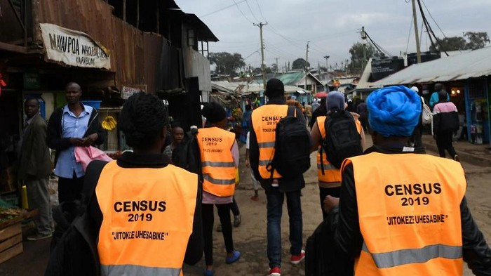
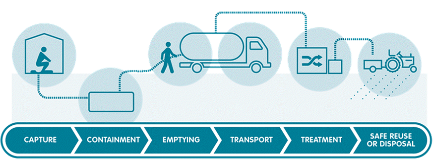

This guide gives an in-depth exploratory analysis of the EPL 2020-21 season dataset using python to gain insights about the dataset.
Packages used for the analysis include pandas, numpy and matplotlib. The code used to produce the report can be found in this
Colab notebook.

Cartoons were a great source of entertainment during our childhood. In this article, we transform RGB images to cartoon images using python.
Packages used for the analysis include cv2, numpy and matplotlib. The source code for the project can be found in this
Colab notebook.

In this project, I was tasked with cleaning and standardizing a health facility assessment data. This involved removing missing values,
imputation, transformation and feature engineering. I used the Google data analytics process guide (Ask, Prepare, Process, Analyze, Share, Act) for the analysis workflow.
R packages used include: rmarkdown, tinytex, skimr, tidyverse, and janitor.
The source code for data cleaning process can be obtained
here.
Pregnancy and childbirth complications are the leading cause of death among girls aged 15 to 19 years globally.
In order to gain insights on the teen pregnancy patterns in Kenya, I extracted the raw data from DHIS2, cleaned and developed an
R shiny dashboard application. Packages used in the application development include:
shiny, shinydashboard, dplyr, ggplot2, plotly and leaflet. The source code for the application can be obtained
here.
The aim of this application was to allow for an interactive exploration of the biodiversity data for Poland. Data was obtained from the
Global Biodiversity information Facility (GBIF). Packages used for the application development include: shiny, shiny.semantic, and tidyverse.
The source code for the application can be obtained
here.

The 2019 Kenya population and Housing Census was conducted in August 2019 and information included demographic and socio-economic characteristics of the population.
Raw data was extracted from the Kenya Bureau of statistics website,cleaned using tidyverse package and developed a
shiny application for action-inspiring insights.
The source code can be accessed here.

The tableau dashboard helps WASH experts understand and communicate how excreta physically flows through a city or town.